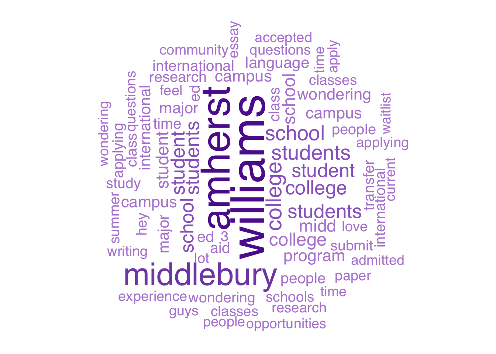

Which NESCAC Reigns Supreme?
Assessing the sentiments, engagement and prominent themes of the Amherst, Middlebury, and Williams College subreddits
Abstract
How does sentiment flow through the online communities of college students? What topics are most important to each group, and how have these conditions fluctuated with time? In this project, we dive into the world of Reddit, analyzing the emotional tone, engagement, and content of posts across three NESCAC college subreddits: Amherst, Middlebury, and Williams. By obtaining data in real-time using the Rivera (2025) RedditExtractoR scraping package, we examine positive negative valence, comment count, and content themes both over time and as a totality across the three forums. The goal is to explore within and cross subreddit patterns together to see if any discrepancies or global similarities emerge. Through text analysis and statistical modeling, we study how the words of students manifest the sentiment and thematic spectrum of their communities and how sentiment translates to engagement, with a particular focus on dicussions surrounding the admissions process.
What’s going on here?
If you are unfamiliar with Reddit.com, we may have to begin by inquiring about the rock you’ve been living under for nigh-on two decades. In all seriousness (don’t stop reading, we’re sorry), along with X, the forum-based social media platform is a primary hub for commentary on any issue you could think of (for better or for worse). It is this plethora of unfiltered content that makes Reddit a commonly visited site for web scrapers and data scientist nerds alike with a variety of goals including but not limited to: theme and topic discovery, sentiment and engagement analysis, and user activity research. Our current data science project is spurred by similar motivations; we look to extract key topics and conduct sentiment analysis (positive or negative valence of a text) for three individual subreddits: Amherst College, Middlebury College, and Williams College. Specifically, we aim to compare the sentiments meaningfully of each subreddit, as both a per-post average and a totality, examine temporal trends in sentiment and comment engagement, extract the most frequently discussed topics, and, because we are looking at colleges here, and track mentions of the admissions process.


You may be wondering why we picked these specific subreddits and what this project can tell us in the grand scheme of things. As students at Amherst College, we thought it would be particularly fun to compare our own subreddit to that of some of our least favorite sister schools in the NESCAC. On a more practical basis, these three subreddits were small enough for us to be able to scrape all posts until January 2020 with no issues. In regards to our purpose, even if you are not a current student in the NESCAC who may get a kick out of pitting Amherst, Middlebury, and Williams against each other, our analysis provides insights into what is being discussed and prioritized at these different institutions, along with an assessment of their varying levels of positivity. We think of prospective students as one group who might be interested in our results, as well as anyone curious about the state of the small liberal arts colleges (at least from Reddit’s perspective).
RedditExtractoR
Web scraping is a notoriously error-laden path. As websites increasingly deploy dynamically rendered data and IP address blocking, it has never been harder to get the data you want. Luckily, we found a tool that could scrape up to 1000 posts per request. The Rivera (2025) RedditExtractoR scraping package gives a post’s title, content, number of comments, and date, all in as little as 3 lines of R code:
#example on how we scrapped data from the RedditExtractoR package
# to get individual data from each college's subreddit in a certain time range
# in our case, from 2020-2025
library(RedditExtractoR)
amherst_posts_raw <- find_thread_urls(
subreddit = "amherstcollege", sort_by = "new", period = "day")Methods for Sentiment Analysis
Once we scraped each subreddit, we joined all the posts into one big dataset and assigned a sentiment score to the content of each post. This score was calculated using the Afinn Lexicon, which maps words to integer values between -5 and 5 based on their positive-negative valence (for more information, see Zhang (n.d.)). The score for each post simply became the sum of the sentiments for the words that comprised it. Further documentation of our methods will be laid out as we delve into our specific efforts below, but if you want to explore the general dataset that we created and used throughout the project, see Figure 2 at the end of this blog. What you are seeing here are the results of recent, applicable, and primary-sourced data!
Raw Data Reference
References
Rivera, I. (2025), “Ivan-rivera/RedditExtractor,” R,.
Zhang, Z. (n.d.). Text mining for social and behavioral research using r.